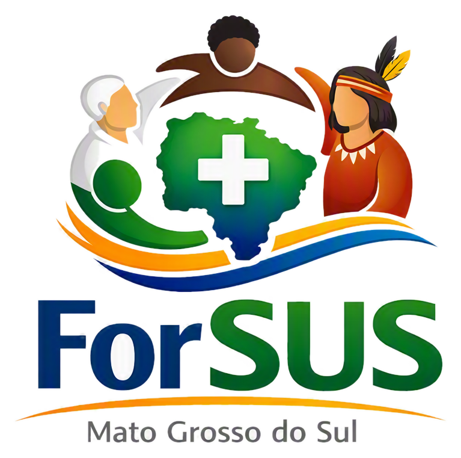
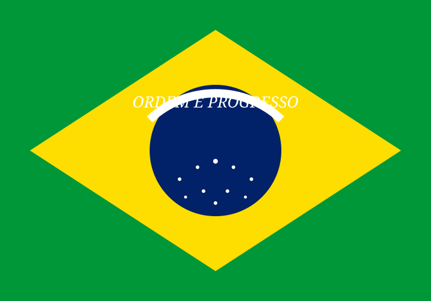

O ForSUS/MS reúne entidades, instituições, movimentos sociais e fóruns municipais de usuárias e usuários do Sistema Único de Saúde, atuando junto ao Conselho Estadual de Saúde para defender direitos, garantir equidade e fortalecer o controle social em todo o Estado.
O Fórum Permanente das Entidades, Instituições e Movimentos Sociais representativos de Usuárias e Usuários do SUS de Mato Grosso do Sul (ForSUS/MS) é o espaço estadual de mobilização e controle social voltado a defender os direitos da população, garantir a equidade e combater as desigualdades na formulação e execução das políticas públicas de saúde.
Com sede em Campo Grande/MS, o Fórum se reúne mensalmente para discutir e articular políticas públicas de saúde, e é responsável por indicar os representantes do segmento de usuários que ocupam assento no Conselho Estadual de Saúde — inclusive dois lugares na própria Mesa Diretora do CES/MS.
Onze frentes de atuação que sustentam o controle social da saúde pública em todo o Estado.
Discute e delibera propostas do segmento de usuários sobre políticas de saúde nos três níveis de governo.
Articula entidades e movimentos sociais para o preenchimento das vagas de usuários no Conselho Estadual de Saúde.
Indica, entre os conselheiros titulares eleitos, dois representantes para a Mesa Diretora do CES/MS.
Promove encontros, seminários e rodas de conversa para consolidar o SUS e o controle social.
Cadastra entidades e movimentos com abrangência estadual ou atuação em ao menos 3 municípios de MS.
Defende o acesso universal e de qualidade do SUS, combatendo desigualdades no atendimento.
Representa, perante autoridades competentes, os interesses gerais das usuárias e usuários do SUS/MS.
Celebra parcerias que fortaleçam o controle social e o próprio Fórum, respeitada sua autonomia.
Denuncia ações, omissões e políticas que contrariem os princípios norteadores do SUS.
Incentiva entidades membros em grupos de trabalho, comissões e outras instâncias de controle social.
Apoia a organização e articulação dos Fóruns Municipais de Usuários do SUS em todo o Estado.
Três instâncias, cada uma com um papel claro na condução do controle social.
Instância máxima de decisão, composta por todos os membros titulares e suplentes. Elege a Comissão Executiva, referenda representantes ao CES/MS e delibera sobre o próprio Regimento.
Quórum: 50% + 1 (1ª convocação)Órgão de gestão com 6 membros eleitos para mandato de 3 anos: Coordenação, Vice-Coordenação, 1º e 2º Secretários, Coordenação de Finanças e de Comunicação e Mobilização Social.
Mandato: 3 anos, recondução permitidaGTs temporários ou permanentes, instituídos pela Plenária para analisar temas específicos, acompanhar políticas setoriais ou organizar eventos de controle social.
Composição paritária garantidaGestão provisória de 6 meses, conduzindo o Fórum até a eleição definitiva pela Plenária.
A base normativa que todo conselheiro de saúde precisa ter à mão — da Constituição às resoluções do CNS.
"A saúde é direito de todos e dever do Estado." A seção que funda o SUS e a participação da comunidade.
Ler no Planalto ↗ Lei 8.080/1990Dispõe sobre as condições para promoção, proteção e recuperação da saúde, e a organização do SUS.
Ler no Planalto ↗ Lei 8.142/1990Institui as Conferências e os Conselhos de Saúde — a base legal direta da atuação do ForSUS/MS.
Ler no Planalto ↗ LC 141/2012Regulamenta os percentuais mínimos de aplicação em ações e serviços públicos de saúde pela União, Estados e Municípios.
Ler no Planalto ↗ Resolução CNS 453/2012Fixa a organização, composição paritária e funcionamento dos Conselhos de Saúde em todo o país.
Ver no CNS ↗ Regimento ForSUS/MSO documento que rege diretamente o funcionamento, a estrutura e as competências do próprio Fórum.
Baixar PDF ↗Tudo que sua entidade precisa para participar ativamente do controle social em MS.
Preencha o Termo de Adesão e reúna a documentação exigida pelo Art. 4º do Regimento — Ata de Fundação, Estatuto, CNPJ e relatório de atividades.
Iniciar adesão →Consulte as datas, pautas e atas das reuniões ordinárias mensais e extraordinárias do ForSUS/MS.
Solicitar calendário →Acesso ao arquivo documental das reuniões, conforme mantido pela 1ª e 2ª Secretarias (Art. 14 do Regimento).
Solicitar acesso →Indique representantes para os GTs temáticos e acompanhe relatórios periódicos apresentados à Plenária.
Participar de um GT →Entidades filiadas devem apresentar anualmente seu relatório de atividades (Art. 5º, §4º do Regimento).
Atualizar cadastro →Receba pautas, convocações e informativos sobre a saúde pública em MS pelos canais oficiais do Fórum.
Entrar na lista →Novo regimento consolida a estrutura organizacional do Fórum e reforça as regras de adesão de entidades.
Ler notícia completa →Processo eleitoral definiu os dois nomes do segmento de usuários que passam a compor a Mesa Diretora.
Ler notícia completa →ForSUS/MS apoia a criação de novos fóruns municipais, ampliando a capilaridade do controle social.
Ler notícia completa →Entidades, instituições, movimentos sociais e fóruns municipais de usuários do SUS em MS podem solicitar adesão ao ForSUS/MS a qualquer momento.